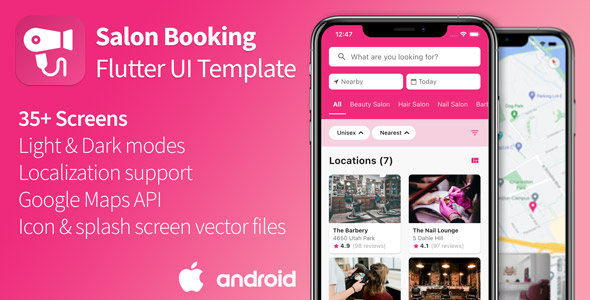

Salon-Flutter-UI¶
Salon / Barber Shop / Spa booking demo app template built with Flutter
| Author: | Zoran Juric |
|---|---|
| Version: | 1.3.0 |
Salon-Flutter-UI is a nicely designed mobile application template developed using Flutter, open-source mobile application development SDK created by Google for building natively compiled applications (Android and iOS) from a single codebase.
Salon-Flutter-UI saves a lot of time to develop a beautifully designed mobile application for online appointment booking of beauty salons, body care and spa centers!
Note
Salon-Flutter-UI is not a fully functional application with a background server, but a UI template where the same data is loaded from JSON files stored in application and always presented in the same way.
Requirements¶
- Flutter SDK v1.22 or newer (Dart SDK 2.8.0 or newer).
- Latest stable version of Android Studio for Android development.
- Xcode for iOS development.
You can run this template using any of the following devices:
- A physical device (Android or iOS) connected to your computer and set to developer mode.
- The iOS simulator. (Requires installing Xcode tools)
- The Android emulator. (Requires setup in Android Studio)